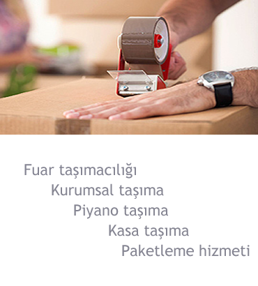
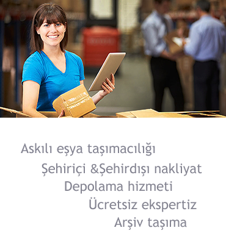
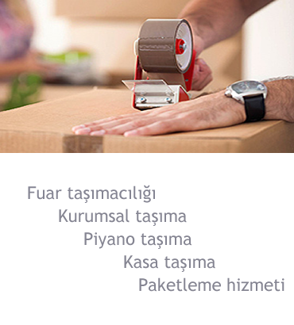
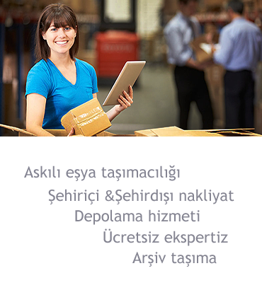
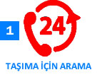
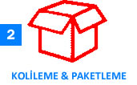
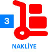
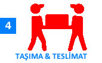

Şehirler Arası Nakliyat
Şehirler arası nakliyat, bölgesel nakliyata nispeten daha geniş mesafe içeren transfer biçimidir. Taşıma yönüyle farkları yoktur. Şehirler arası taşımacılıkta mesafe fazlad ır. Bu gerekçeyle, sözü edilen gaye adına sevk edilecek nakliye kamyonlarının uzak yola karşı muhafazalı ve emniyetli yapıda olması gerekmektedir. Şirketimizin kullandığı iller arası taşımacılık araçları, dirençli ve güvenlidir. Şirketimiz şehirler arası nakliye tavsiye firmalar arasında olmaktan gurur duymaktadır. Ayrıca şirketimiz şehirler arası uygun nakliyat hizmeti sunarak en iyi nakliyat hizmeti sunmaktadır. Şehirler Arası Taşımacılık Ne Demektir? Nasıl Sonuçlandırılır? Çağımız taşımacılık teknolojisinin gelişme göstermesiyle, kapalı kasalı kamyonların kullanışlılığı ve emniyeti fazlalaşmıştır. Şehirlerarası Taşıma işlerinde, yük çeşitlerine göre farklılaşan araçları kullanan işletmemiz, sür’atli ve güvenli nakliyat işlemleri arz etmektedir. Ülkemizin her tarafına iller arası nakliyat hizmeti veren firmamız, vatandaşlarımızın taleplerine en doğru biçimde yanıt verebilmek gayesiyle, gerekli bulunan bütün şartları yerine getirmektedir. Şehirler arası evden eve taşımacılık süreçlerinde, eğitimli elemanlar görev yapar. Ayrıca işletmemizin kullandığı kaliteli operasyonlar kapsamında son derece güvenli eşya taşıma işlemleri icra edilmektedir. Şehirler Arası Taşımacılık İşlemleri? Öz Avcılar nakliye işlemleri start alır ve gerekli kapalı kasa araç, Öz Avcılar tarafından tespit edilir. Anlaşmadan sonra taşınacak mekanda bulunan tüm ev eşyaları ve cihazlar sigorta kapsamına alınır. Kırılgan malzeme ve materyallerin kendine özgü ambalaj malzemeleriyle paketlenmesi ile öteki tüm eşya ve malzemelerin korunaklanması işlemlerinden itibaren, nakliyat sebebiyle sevk edilmiş olan araca tüm eşyalar yüklenir. İlk aşamada hacimli ve dayanıklı mobilya ve beyaz eşyalar istiflenir ve daha sonra kırılgan ev eşyaları istiflenir. Kapalı kasalı araçlarımızın ev eşyası nakliyesi işlemi konusunda spesifik bir biçimde imal edilmesiyle, şehirler arası taşımacılıkta eşya hasara karşı korunması tam anlamda temin edilmektedir. Organizasyonumuz adına Vatandaşlarımızın memnuniyeti asıl maksatımızdır. Şehirler arası nakliye firmaları arasında yer alan Öz Avcılar şirketimiz yıllardır İstanbul şehirler dışı nakliyat hizmeti sunmaktadır. Şirketimiz şehirler arası nakliyat temiz nakliye güvencesi ile taşıma işlemlerini gerçekleştirmektedirler. Ayrıca firmamız en uygun şehirler arası nakliyat ücreti sunarak kaliteli nakliyat hizmeti almanızı sağlamaktadır.
 



SERVİS HİZMET PROSEDÜRÜ
   
Hizmetlerimiz
Referans
ADRES
Kemalpaşa Namık Kemal Cd. No:27 34204Bağcılar/İstanbul
TEL 1 : 0212 432 77 33
TEL 2 : 0212 432 77 34
CEP : 0532 414 52 77
info@ozavcilarnakliyat.com
www.ozavcilarnakliyat.com